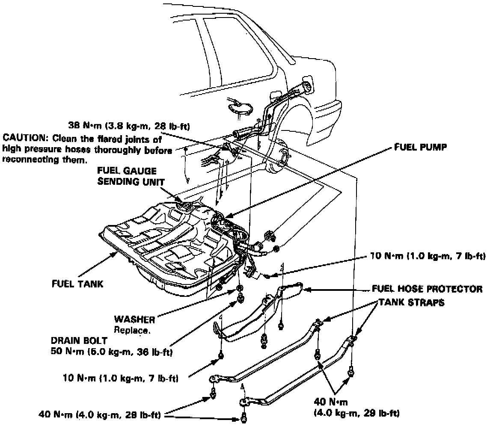

Fuel Tank: Service and Repair
REPLACEMENTWARNING: Do not smoke while working on fuel system. Keep open flame away from your work area.

1 Block front wheels. Jack up the rear of the car and support with jackstands.
2. Remove the drain bolt and drain the fuel into an approved container.
3. Disconnect the 4P connector (located under the trunk floor).
CAUTION: Be sure to turn the ignition switch OFF before disconnecting the wires.
4. Remove the fuel hose protector.
5. Disconnect the hoses.
CAUTION: When disconnecting the hoses, slide back the clamps, then twist hoses as you pull to avoid damaging them.
6. Place a jack, or other support, under the tank.
7. Remove the strap bolts, and let the straps fall free.
8. Remove the fuel tank.
NOTE: The tank may stick on the undercoat applied to its mount. To remove, carefully pry it off the mount.
9. Install a new washer on the drain bolt and the fuel pump line, then install parts in the reverse order of removal.